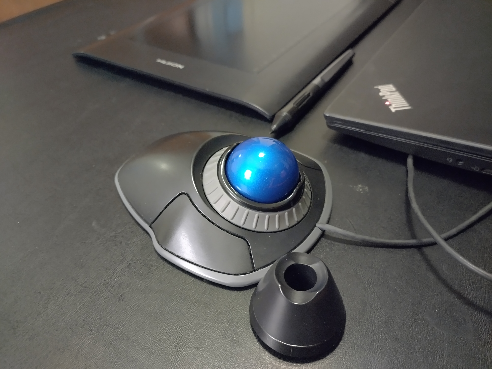
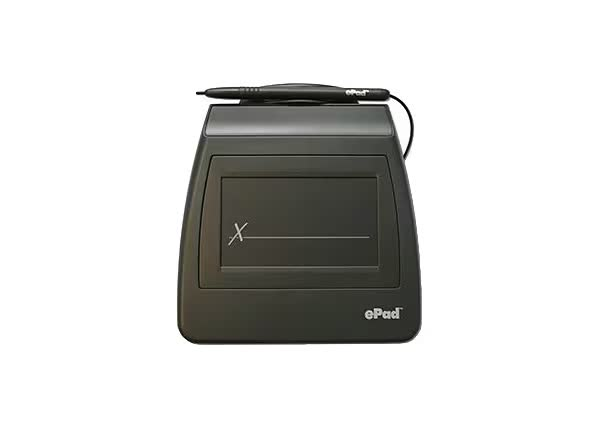
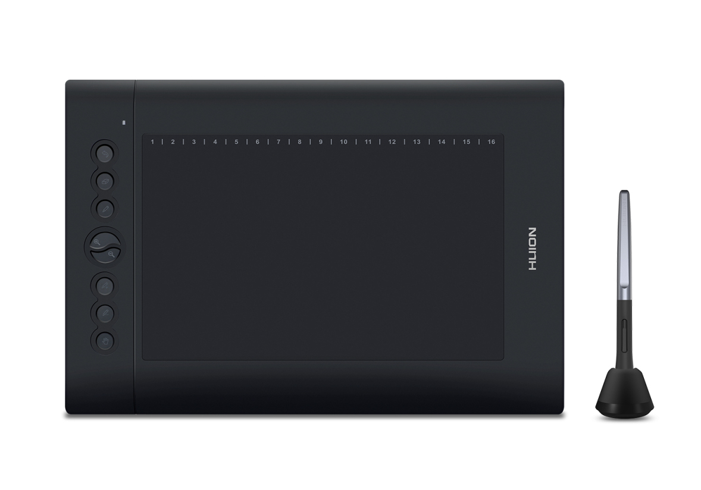
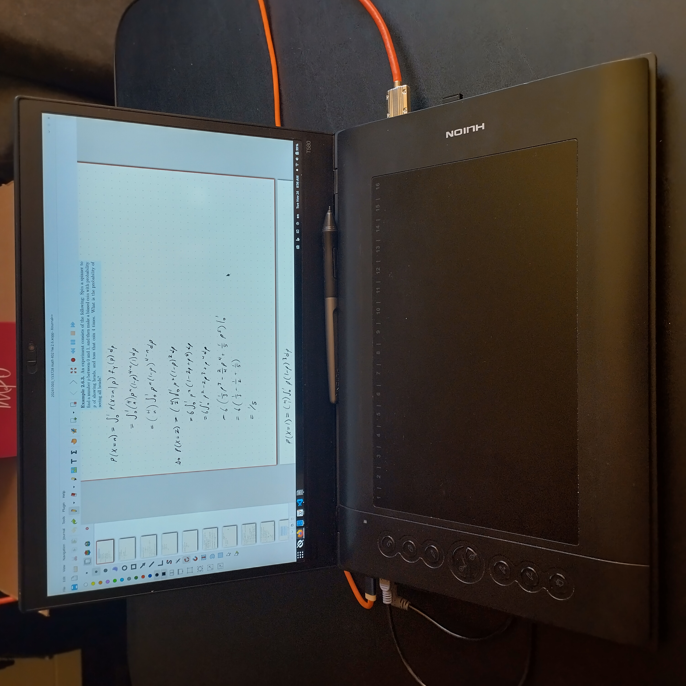
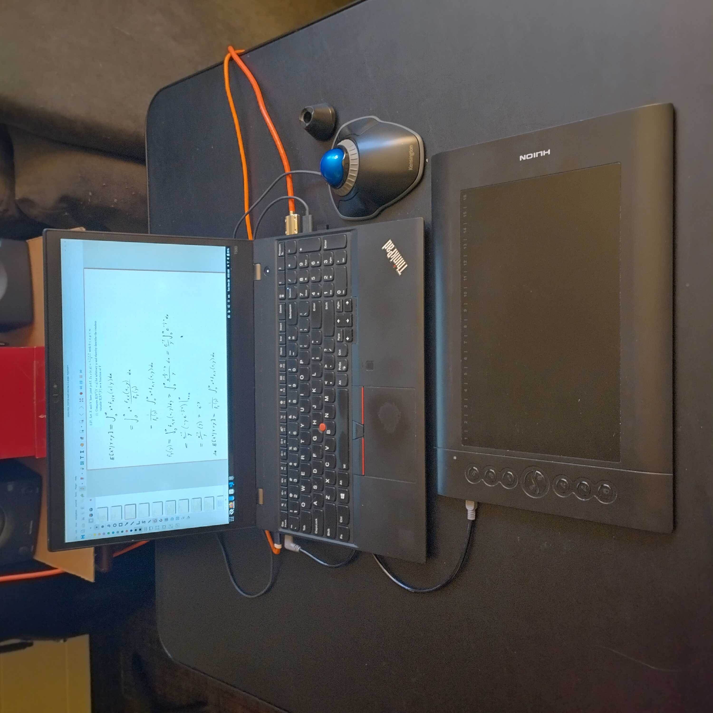
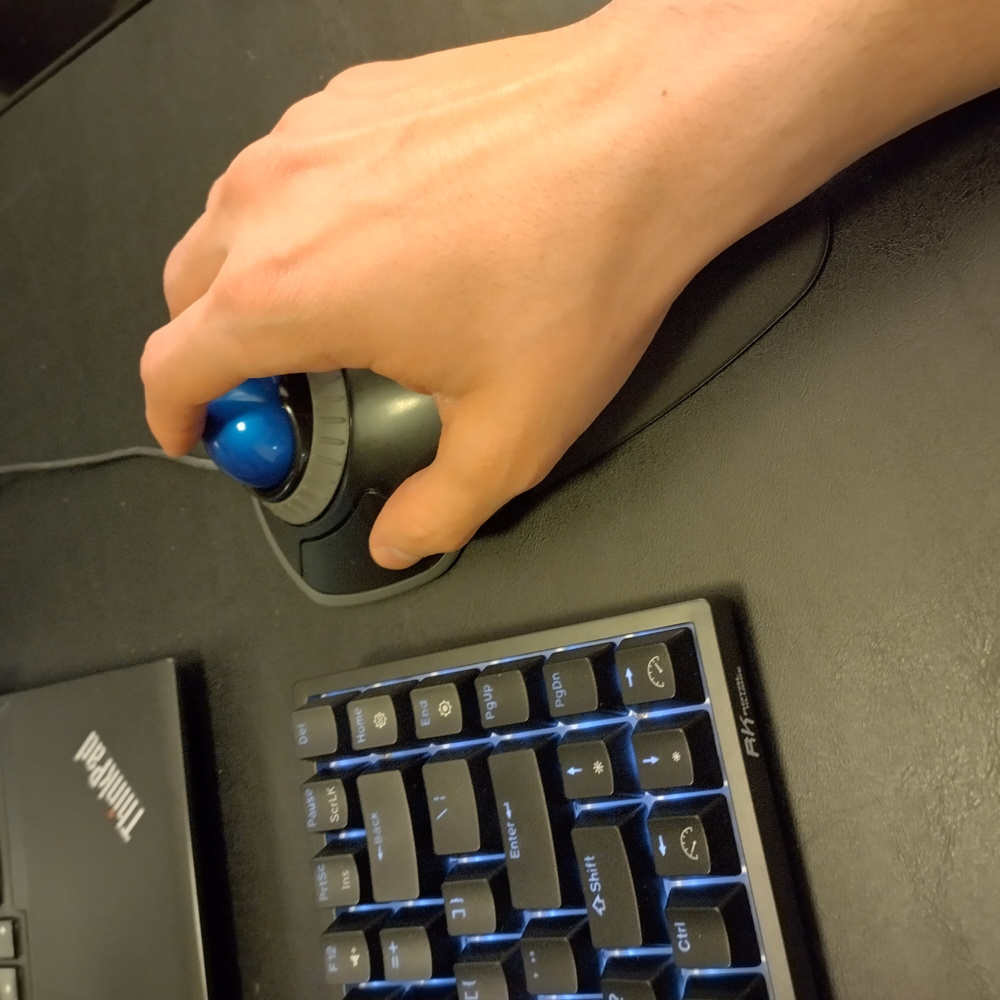

A cheaper alternative to tablets, and the mouse to rule them all

As a student in applied mathematics, I spend much of my time writing code, taking lecture notes, and working out proofs, all at breakneck speed. Many of my peers use LaTeX to take notes and do homework. While I appreciate LaTeX and often use it for formal write-ups, I don’t love not being able to quickly draw diagrams, change colors, make up new notation on the fly, etc. Handwriting is infinitely flexible, and in my experience, much quicker when I’m trying to pump out my homework and move on.
A notebook isn’t enough. I want my notes to be stored in the cloud. I want them to be organized and easily accessible. I want them to be stored in .pdf format so they’re future-proof. And I don’t want to buy a tablet. Why? Well, good tablets are expensive, I like my laptop, I don’t want to bring two devices to school, and I like being able to seamlessly copy snippets of code I’m writing and textbooks I’m referencing into my notes, among other things.
About two years ago, the solution came to me. I had the idea when I was a missionary in Cali, Colombia, walking down the street just a few months before it was time for me to go home. I was an office secretary and I had just used the mission credit card to pay at a notary, and signed for it using a screenless credit card signature pad attached to the card reader.

I thought as I walked, “why don’t they just take one of those and scale it up?” I was certain that such a product must exist.
Sure enough, it does—but it isn’t generally marketed to people like me. Many companies, the foremost of which is Wacom, manufacture screenless tablets with pressure-sensitive pens to do digital art and animation. The level of quality varies greatly. The fanciest one I’ve used has a screen and sells for $3,500 USD (The research group I currently work with has one to annotate tomograms—it’s a Wacom Cintiq Pro 27).
I don’t have that kind of cash. So I saved a few hundred bucks and got one of these on Amazon for $50.

There’s really nothing special about this specific model (Huion H610PRO v2). It’s just a generic off-brand screenless Wacom tablet that connects to your computer through a USB cable. People usually use these to do digital art and animation. I have found that they work astoundingly well for notetaking as well. Neither the pen nor the tablet use batteries, so when I’m on the go, all I have to charge is my laptop.
I’ve been using my tablet for a year and a half now, and it’s still working like new. I only had to replace the pen nib once because I was fiddling with it and lost it on the floor. Whoops!
The trickiest part about all this is how to set it up. Naturally with unstandardized hardware like a screenless tablet there are lots of driver issues and subtleties to keep in mind. In addition, I use Linux (Debian 12 with GNOME and KDE), so things are often a little less intuitive (but more fun). Huion (the manufacturer) makes a good driver, and I also like using OpenTabletDriver, an open-source alternative. Things get a little dicey with a multi-monitor setup but I think I’ve got it figured out now.
I take notes in Xournal++. I love it. It’s everything I needed in notetaking software and more. My tablet has eight buttons on the left, which I’ve mapped to the following in Xournal++: undo, delete, pencil, zoom in, zoom out, new page, the lasso selection tool, and the hand tool. I also have an on-screen icon in my GNOME panel to take screenshots (Screenshot Tool), which is especially useful when I want to paste snippets from textbooks (all of which I access digitally) into my homework. As a result, my workflow is very fast!
I deliberately chose to map the buttons to shortcuts for which I wouldn’t want to move my pen. For example, if I’m writing a word and I mess up, I can undo my mistake without having to change my pen position, so I can rewrite it immediately. I can select and move a group of objects with the lasso without having to move away. I have come to realize that it is much faster than a traditional tablet because of these shortcut keys. Maybe an iPad would be better with some kind of shortcut keypad… looks like that exists too.
Conveniently, the tablet has little rubber feet that fit perfectly over my laptop keyboard and trackpad. I use a 15.6 inch Lenovo ThinkPad, and by complete coincidence, the Huion tablet is exactly the same size. It’s perfect for when I’m taking notes in a lecture hall or the ACME study room is too full for me to be able to really spread out.

When I do have room to spread out, I take advantage of the space.

People ask me about my tablet all the time—but usually it’s after they’ve noticed my mouse. Like most people, I used to use a normal one. I’m relatively tall, so I have big hands. Something about gripping a tiny plastic mouse, scrunching up my hand, and moving it around for hours like that made my hand and wrist start to hurt. It would be a real bummer to get carpal tunnel syndrome, so I took action before it was too late and started looking into alternatives to the usual mouse.
That’s when I discovered trackballs. What a revelation! I picked up a Kensington Orbit a year and a half ago (a couple months after getting the tablet, I think) and have never looked back. My wrist and hand have never hurt since.

Because it’s larger and wider than a normal mouse, it opens my hand up. That’s the real key, I think. It also takes up a lot less space because it stays in place unlike a mouse, which is a huge plus when I’m in a crowded study room or computer lab. I love the tactile feel of moving the ball around and scrolling with the ring, it feels more natural to me. It took time to get used to it, but these days I bring the thing everywhere.
This setup has been a game-changer for me as a student. It’s affordable, reliable, and works well with my workflow. Sometimes the best solutions are the ones you figure out by thinking a little outside the box. If nothing else, it’s been fun to experiment and find what works best for me.